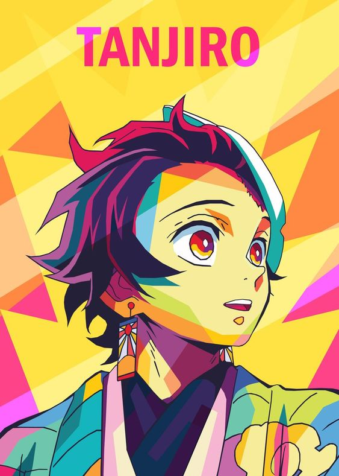
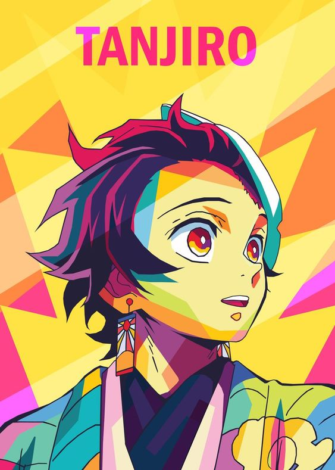

The main protagonist of the series, Tanjiro is a kind-hearted and determined young boy who becomes a Demon Slayer after his family is slaughtered by demons. He possesses a heightened sense of smell and trains in the Water Breathing technique. Tanjiro is driven by his goal to avenge his family and find a cure for his demon-turned sister, Nezuko.
 
